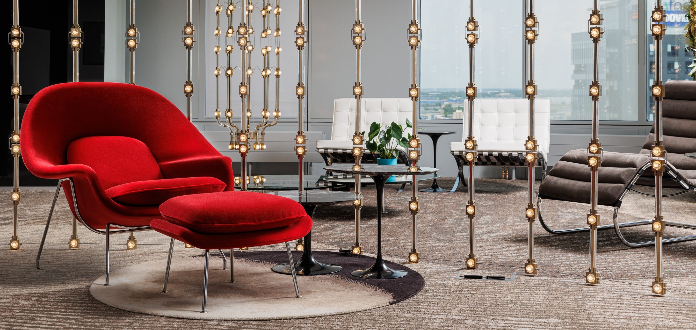
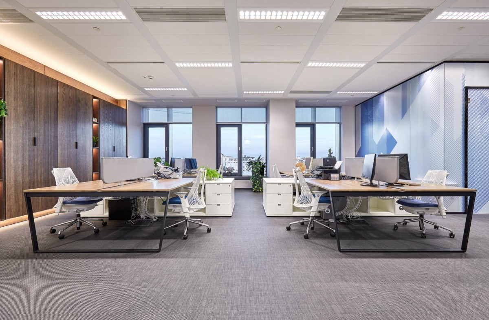
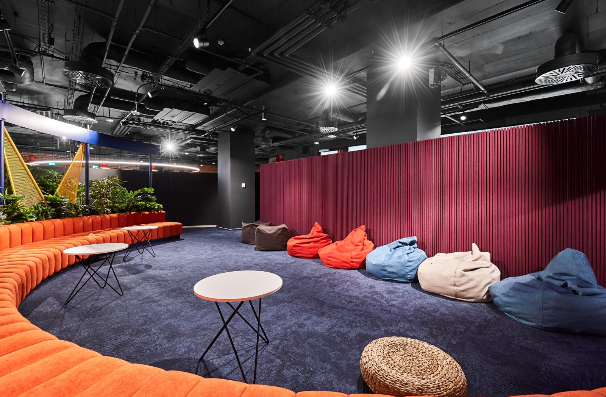
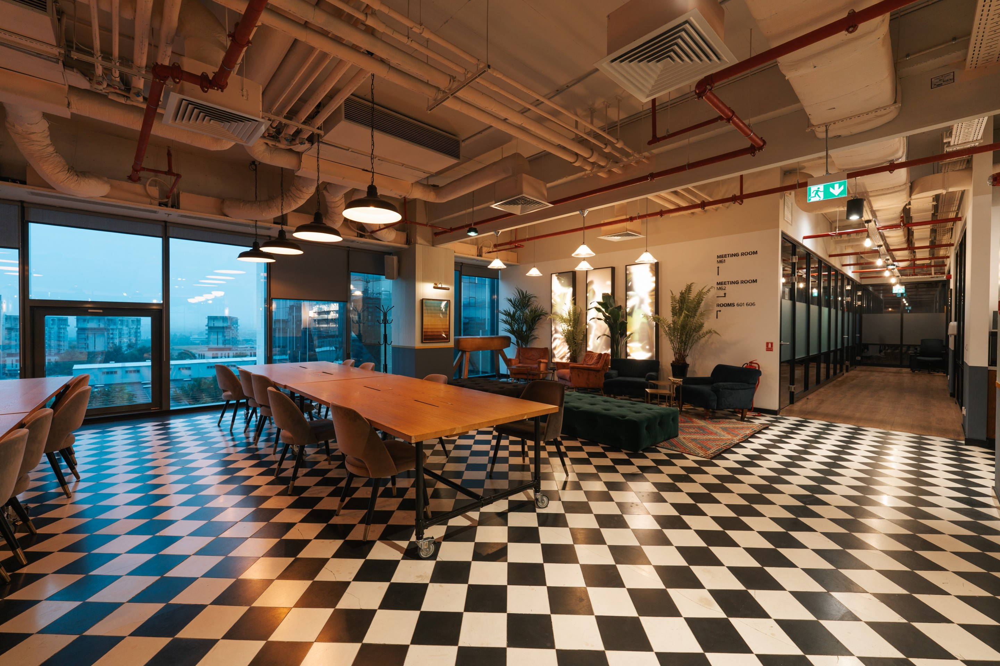
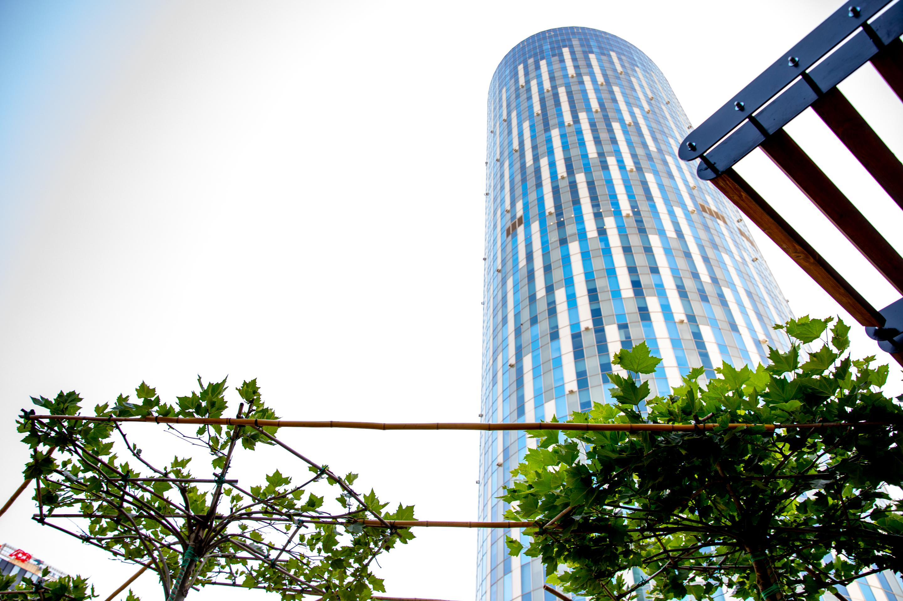

Press coverage, interviews, and market signals around Workspace Studio.


2024 is defined by budget-centred design, not lower design ambition.
A strategic point of view on how companies balance cost discipline with better workspace decisions.
Read on Nine O'ClockErgonomics and design budgets increased by around 20 percent.
A market read on redesign costs, office quality, and what companies are prioritizing now.
Read on News.roWorkspace Studio expands operationally through a major logistics investment.
A growth story that moves beyond design and into the infrastructure behind delivery quality.
Read on ForbesHoratiu Didea says a modern office is now seen as an investment in employees.
Interview on how office spending is increasingly tied to wellbeing and retention.
Read on AngajatorulMeu
Office interior fit-out costs continue to evolve as companies rethink workplace quality.
A market look at pricing, redesign pressure, and the new realities of office investment.
Read on New Money
Ergonomics and design investments are up by approximately 20 percent in 2024.
A business-facing read on how office quality remains a priority even in tighter budget cycles.
Read on Revista BizBusiness Review tracks the 20 percent rise in ergonomics and design investment.
An English-language business press take on office redesign spending and market direction.
Read on Business Review
About 70 percent of revenue now comes from redesign projects, not new office builds.
A leadership interview focused on reconfiguration, market shifts, and business resilience.
Read on Forbes
A new word in the business agenda: human.
A broader leadership conversation around people-first work environments and office expectations.
Read on Business Magazin
Horatiu Didea on what Workspace Studio expects from the office market next.
A short entrepreneur-format interview about current market pressure and growth expectations.
Read on ZFOffice trends in 2024 point to redesigns and stronger design impact.
A concise look at how companies are upgrading offices to support hybrid work and employer image.
Read on AngajatorulMeuEmployees today seek more than just a workspace in the post-beige office era.
An English-language interview about expectations, culture, and the visual future of the office.
Read on Romania Insider